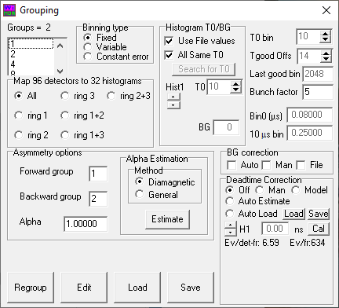
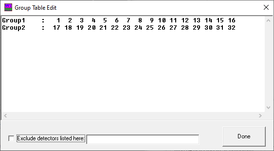
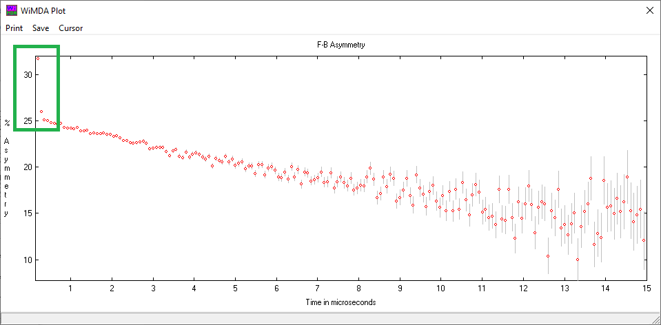
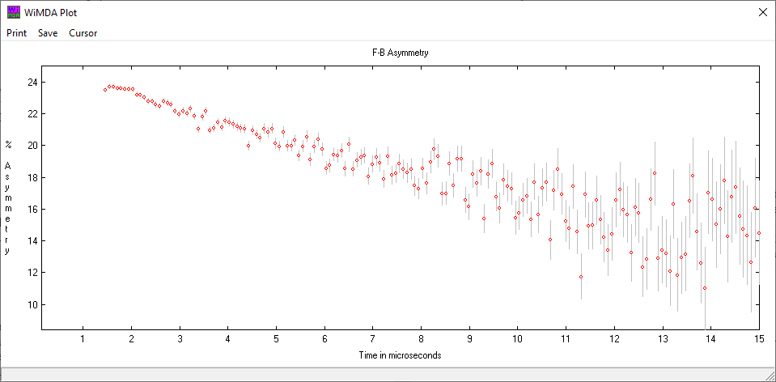

Grouping
The WiMDA grouping window is where the data, which is stored in the data file as multiple histograms of the number of detector counts as a function of time, can be processed so that it can be fitted.
{kind=link}
The various panels in this window have the following functions:
Groups
This sets the number of groups to group all the detector histograms into. For example, if you want to look at LF or ZF F/B Asymmetry (very common), select ‘2’ [one group for forward, one backward]. If you wish to look at TF-µSR data, select the number of histograms you wish to fit.
Detector Mapping
For many instruments, the number of detectors exceeds the maximum number of histograms in WiMDA, which is 32. To fix this, WiMDA adds together histograms of multiple detectors, but there may be some cases where the output of only some of the detectors are used. To do this, select the relevant radio button in this section. (In most cases, selecting ‘all’ is fine, but ask your local contact if you are unsure).
Asymmetry
To tell WiMDA which group of detectors are part of the ‘Forward’ and ‘Backward’ group, click ‘Edit’ at the bottom of the grouping window. This launches the group table editing window, which looks like the following:
{kind=link}
This has two groups, with 16 histograms in each (This example is using data from MuSR, which has 64 detectors, so every histogram is the sum of counts from two detectors). Check the manual for the instrument you are using to find out the best grouping for your analysis. Once you’re happy with the table, click ‘Done’. If needed, you can now change the ‘Forward group’ and ‘Backward group’ text boxes on the Grouping window so that the asymmetry is calculated properly.
Binning
The ‘binning type’ radio buttons can be used to select the way in which the time series data is binned:
Fixed enables the ‘Bunch factor’ text box [on the right hand side of the window], and bins the data so that each new data point takes the average of ‘Bunch factor’ points (i.e., setting this to 1 is no binning, and setting this to two reduces the number of data points by half, but makes the data points twice as spread out in time).
Variable binning enables the ‘Bin0’ and ‘10 µs bin’ text boxes. Use these to specify the length of time for these bins (in µs), and WiMDA will bin the data by interpolating smoothly between these two bins (this means data at short times, which will have better statistics, can be binned less than the data at long times, which have fewer statistics leading to larger error bars in general).
Constant error binning enables just the ‘Bin0’ text box, which can be used to specify the amount of time for the first bin. WiMDA then bins the rest of the data so that all the error bars are the same on each of the data points.
In general, it is simplest to leave the binning as ‘Fixed’, and to specify a reasonable bunch factor. The binning chosen can have a large effect on the fits you obtain, so it is important to ensure that whatever you choose is sensible (and it’s a good idea to write it down!).
Alpha estimation
To account for differences in detector efficiency and geometry, a parameter \(alpha\) is applied so the F/B asymmetry is calculated as
\(A(t) = \frac{N_\mathrm{F}-\alpha N_\mathrm{B}}{N_\mathrm{F}+\alpha N_\mathrm{B}}\).
To estimate this, load a run with a small transverse field (normally around 20–30 Gauss), ensure the estimation method is set to ‘Diamagnetic’ and click ‘Estimate’. This will adjust the data so that the data is symmetric about \(A(t)=0\). The ‘General’ \(\alpha\) estimation method uses the counts directly to find \(\alpha\)
Hint
The diamagnetic \(\alpha\) estimation option tends to be the most reliable, so it is advisable to use this unless you do not have access to a low transverse field run.
Deadtime correction
Note
Deadtime correction is only necessary when dealing with data from pulsed sources.
After a detector has recorded a positron count there is a small time interval before it is able to detect another count. It is possible that a positron will arrive within this interval and not be recorded. If the measured counts on a histogram is \(N^\mathrm{M}(t)\), adding a dead time correction transforms the data like
\(N(t) = \frac{N^\mathrm{M}(t)}{1 - (\tau_\mathrm{DT}/\tau_\mathrm{bin})N^\mathrm{M}(t) - O(N^\mathrm{M}(t)^2)}\),
where \(N(t)\) is the corrected counts, \(\tau_\mathrm{DT}\) is the dead time of the detector, and \(\tau_\mathrm{bin}\) is the bin width. The value of \(\tau_\mathrm{DT}\) is a property of the detector, and tends to be of the order of a few nanoseconds. If you require a dead time correction, for most experiments select ‘Auto load’, which will load in the deadtime from the nexus file. Alternatively, ‘Manual’ lets you change deadtime for each histogram, ‘Model’ lets you model the deadtime correction by also including higher-order terms (\(O(N^\mathrm{M}(t)^2)\) and beyond in the equation above), and ‘Auto Estimate’ makes an estimate of the deadtime and uses the same value for all histograms.
T0/Tgood
Note
These options do not usually need to be changed, as the automatic values are usually good enough to analyse most datasets.
‘T0’ is defined as the time (in units of the bin number) at which the centre of the muon pulse (or the individual muon at a continuous source) reaches the sample. This parameter is usually measured at the start of the cycle and baked into the nexus files, so normally you should tick ‘Use File values’ and ‘All Same T0’. If you suspect that T0 is wrong, click ‘Search for T0’ to find T0 for your data.
An incorrect choice of T0 makes the data look like this (notice the sharp uptick at the beginning):
{kind=link}
‘Tgood’ is the number of bins after T0 (i.e., the number of time bins after the centre of the pulse) for the whole muon pulse to reach the sample. Like T0, the default setting of a few bins should be adequate, but for F/B transverse field analysis Tgood can be made smaller. Tgood has the effect of removing points from the data, rather than shifting the time.
An incorrect choice of Tgood makes the data look like this (notice there is no data until around 1.5µs!):
{kind=link}
Mathematically, if the data bin width is \(\tau_\mathrm{bin}\), then \(t_0\) and \(t_\mathrm{good}\) transforms the count data like \(N(t) \rightarrow N(t+t_0\tau_\mathrm{bin})\), and all analysis will only take place for data \(t>(t_\mathrm{good}+t_0)\tau_\mathrm{bin}\).
Finally, ‘Last good bin’ is the last time bin which has usable data, meaning data will only be analysed for data at times \(t<t_\mathrm{last}\tau_\mathrm{bin}\).
Background correction
Note
Background correction is only necessary for continuous sources, or for data analysis at very long times (where the count rates are low).
The background signal represents particles detected that are not the decay positrons of muons implanted in the sample. This background signal must be subtracted from the total positron count. The ‘auto’ option corrects for the background count by fitting the data to a muon decay plus background and then subtracting the background signal. The manual option sets the background at a constant value, which can be altered in the ‘BG’ text box (in the Histogram T0/BG section). The ‘file’ option allows another measured run to define the background. The ‘reg’ option appears when analysing data from continuous sources, and defines a region of bins from where the background can be estimated.